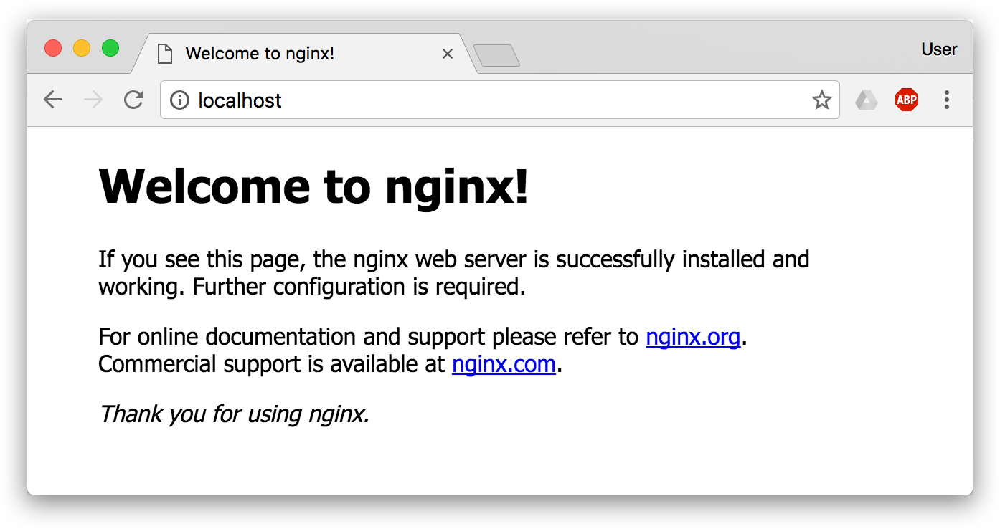
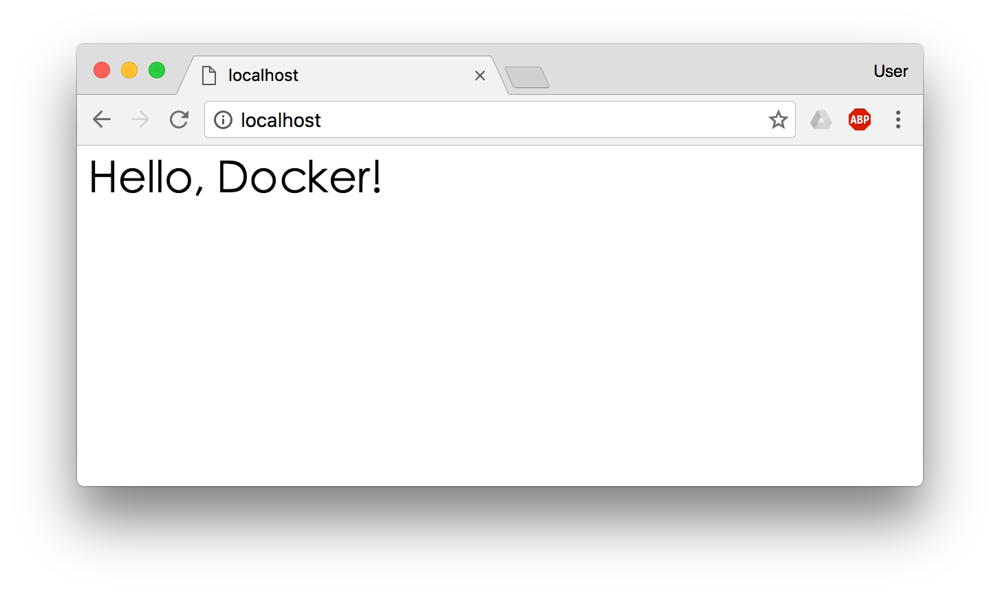

在之前的介绍中，我们知道镜像是 Docker 的三大组件之一。
Docker 运行容器前需要本地存在对应的镜像，如果本地不存在该镜像，Docker 会从镜像仓库下载该镜像。
本章将介绍更多关于镜像的内容，包括：
从仓库获取镜像；
管理本地主机上的镜像；
介绍镜像实现的基本原理。
之前提到过，Docker Hub 上有大量的高质量的镜像可以用，这里我们就说一下怎么获取这些镜像。
从 Docker 镜像仓库获取镜像的命令是 docker pull。其命令格式为：
$ docker pull [选项] [Docker Registry 地址[:端口号]/]仓库名[:标签]具体的选项可以通过 docker pull --help 命令看到，这里我们说一下镜像名称的格式。
<域名/IP>[:端口号]。默认地址是 Docker Hub(docker.io)。<用户名>/<软件名>。对于 Docker Hub，如果不给出用户名，则默认为 library，也就是官方镜像。比如：
$ docker pull ubuntu:18.04
18.04: Pulling from library/ubuntu
92dc2a97ff99: Pull complete
be13a9d27eb8: Pull complete
c8299583700a: Pull complete
Digest: sha256:4bc3ae6596938cb0d9e5ac51a1152ec9dcac2a1c50829c74abd9c4361e321b26
Status: Downloaded newer image for ubuntu:18.04
docker.io/library/ubuntu:18.04上面的命令中没有给出 Docker 镜像仓库地址，因此将会从 Docker Hub （docker.io）获取镜像。而镜像名称是 ubuntu:18.04，因此将会获取官方镜像 library/ubuntu 仓库中标签为 18.04 的镜像。docker pull 命令的输出结果最后一行给出了镜像的完整名称，即： docker.io/library/ubuntu:18.04。
从下载过程中可以看到我们之前提及的分层存储的概念，镜像是由多层存储所构成。下载也是一层层的去下载，并非单一文件。下载过程中给出了每一层的 ID 的前 12 位。并且下载结束后，给出该镜像完整的 sha256 的摘要，以确保下载一致性。
在使用上面命令的时候，你可能会发现，你所看到的层 ID 以及 sha256 的摘要和这里的不一样。这是因为官方镜像是一直在维护的，有任何新的 bug，或者版本更新，都会进行修复再以原来的标签发布，这样可以确保任何使用这个标签的用户可以获得更安全、更稳定的镜像。
如果从 Docker Hub 下载镜像非常缓慢，可以参照 镜像加速器 一节配置加速器。
有了镜像后，我们就能够以这个镜像为基础启动并运行一个容器。以上面的 ubuntu:18.04 为例，如果我们打算启动里面的 bash 并且进行交互式操作的话，可以执行下面的命令。
$ docker run -it --rm ubuntu:18.04 bash
root@e7009c6ce357:/# cat /etc/os-release
NAME="Ubuntu"
VERSION="18.04.1 LTS (Bionic Beaver)"
ID=ubuntu
ID_LIKE=debian
PRETTY_NAME="Ubuntu 18.04.1 LTS"
VERSION_ID="18.04"
HOME_URL="https://www.ubuntu.com/"
SUPPORT_URL="https://help.ubuntu.com/"
BUG_REPORT_URL="https://bugs.launchpad.net/ubuntu/"
PRIVACY_POLICY_URL="https://www.ubuntu.com/legal/terms-and-policies/privacy-policy"
VERSION_CODENAME=bionic
UBUNTU_CODENAME=bionicdocker run 就是运行容器的命令，具体格式我们会在 容器 一节进行详细讲解，我们这里简要的说明一下上面用到的参数。
-it：这是两个参数，一个是 -i：交互式操作，一个是 -t 终端。我们这里打算进入 bash 执行一些命令并查看返回结果，因此我们需要交互式终端。--rm：这个参数是说容器退出后随之将其删除。默认情况下，为了排障需求，退出的容器并不会立即删除，除非手动 docker rm。我们这里只是随便执行个命令，看看结果，不需要排障和保留结果，因此使用 --rm 可以避免浪费空间。ubuntu:18.04：这是指用 ubuntu:18.04 镜像为基础来启动容器。bash：放在镜像名后的是 命令，这里我们希望有个交互式 Shell，因此用的是 bash。进入容器后，我们可以在 Shell 下操作，执行任何所需的命令。这里，我们执行了 cat /etc/os-release，这是 Linux 常用的查看当前系统版本的命令，从返回的结果可以看到容器内是 Ubuntu 18.04.1 LTS 系统。
最后我们通过 exit 退出了这个容器。
要想列出已经下载下来的镜像，可以使用 docker image ls 命令。
$ docker image ls
REPOSITORY TAG IMAGE ID CREATED SIZE
redis latest 5f515359c7f8 5 days ago 183 MB
nginx latest 05a60462f8ba 5 days ago 181 MB
mongo 3.2 fe9198c04d62 5 days ago 342 MB
<none> <none> 00285df0df87 5 days ago 342 MB
ubuntu 18.04 329ed837d508 3 days ago 63.3MB
ubuntu bionic 329ed837d508 3 days ago 63.3MB列表包含了 仓库名、标签、镜像 ID、创建时间 以及 所占用的空间。
其中仓库名、标签在之前的基础概念章节已经介绍过了。镜像 ID 则是镜像的唯一标识，一个镜像可以对应多个 标签。因此，在上面的例子中，我们可以看到 ubuntu:18.04 和 ubuntu:bionic 拥有相同的 ID，因为它们对应的是同一个镜像。
如果仔细观察，会注意到，这里标识的所占用空间和在 Docker Hub 上看到的镜像大小不同。比如，ubuntu:18.04 镜像大小，在这里是 63.3MB，但是在 Docker Hub 显示的却是 25.47 MB。这是因为 Docker Hub 中显示的体积是压缩后的体积。在镜像下载和上传过程中镜像是保持着压缩状态的，因此 Docker Hub 所显示的大小是网络传输中更关心的流量大小。而 docker image ls 显示的是镜像下载到本地后，展开的大小，准确说，是展开后的各层所占空间的总和，因为镜像到本地后，查看空间的时候，更关心的是本地磁盘空间占用的大小。
另外一个需要注意的问题是，docker image ls 列表中的镜像体积总和并非是所有镜像实际硬盘消耗。由于 Docker 镜像是多层存储结构，并且可以继承、复用，因此不同镜像可能会因为使用相同的基础镜像，从而拥有共同的层。由于 Docker 使用 Union FS，相同的层只需要保存一份即可，因此实际镜像硬盘占用空间很可能要比这个列表镜像大小的总和要小的多。
你可以通过 docker system df 命令来便捷的查看镜像、容器、数据卷所占用的空间。
$ docker system df
TYPE TOTAL ACTIVE SIZE RECLAIMABLE
Images 24 0 1.992GB 1.992GB (100%)
Containers 1 0 62.82MB 62.82MB (100%)
Local Volumes 9 0 652.2MB 652.2MB (100%)
Build Cache 0B 0B上面的镜像列表中，还可以看到一个特殊的镜像，这个镜像既没有仓库名，也没有标签，均为 <none>。：
<none> <none> 00285df0df87 5 days ago 342 MB这个镜像原本是有镜像名和标签的，原来为 mongo:3.2，随着官方镜像维护，发布了新版本后，重新 docker pull mongo:3.2 时，mongo:3.2 这个镜像名被转移到了新下载的镜像身上，而旧的镜像上的这个名称则被取消，从而成为了 <none>。除了 docker pull 可能导致这种情况，docker build 也同样可以导致这种现象。由于新旧镜像同名，旧镜像名称被取消，从而出现仓库名、标签均为 <none> 的镜像。这类无标签镜像也被称为 虚悬镜像(dangling image) ，可以用下面的命令专门显示这类镜像：
$ docker image ls -f dangling=true
REPOSITORY TAG IMAGE ID CREATED SIZE
<none> <none> 00285df0df87 5 days ago 342 MB一般来说，虚悬镜像已经失去了存在的价值，是可以随意删除的，可以用下面的命令删除。
$ docker image prune为了加速镜像构建、重复利用资源，Docker 会利用 中间层镜像。所以在使用一段时间后，可能会看到一些依赖的中间层镜像。默认的 docker image ls 列表中只会显示顶层镜像，如果希望显示包括中间层镜像在内的所有镜像的话，需要加 -a 参数。
$ docker image ls -a这样会看到很多无标签的镜像，与之前的虚悬镜像不同，这些无标签的镜像很多都是中间层镜像，是其它镜像所依赖的镜像。这些无标签镜像不应该删除，否则会导致上层镜像因为依赖丢失而出错。实际上，这些镜像也没必要删除，因为之前说过，相同的层只会存一遍，而这些镜像是别的镜像的依赖，因此并不会因为它们被列出来而多存了一份，无论如何你也会需要它们。只要删除那些依赖它们的镜像后，这些依赖的中间层镜像也会被连带删除。
不加任何参数的情况下，docker image ls 会列出所有顶层镜像，但是有时候我们只希望列出部分镜像。docker image ls 有好几个参数可以帮助做到这个事情。
根据仓库名列出镜像
$ docker image ls ubuntu
REPOSITORY TAG IMAGE ID CREATED SIZE
ubuntu 18.04 329ed837d508 3 days ago 63.3MB
ubuntu bionic 329ed837d508 3 days ago 63.3MB列出特定的某个镜像，也就是说指定仓库名和标签
$ docker image ls ubuntu:18.04
REPOSITORY TAG IMAGE ID CREATED SIZE
ubuntu 18.04 329ed837d508 3 days ago 63.3MB除此以外，docker image ls 还支持强大的过滤器参数 --filter，或者简写 -f。之前我们已经看到了使用过滤器来列出虚悬镜像的用法，它还有更多的用法。比如，我们希望看到在 mongo:3.2 之后建立的镜像，可以用下面的命令：
$ docker image ls -f since=mongo:3.2
REPOSITORY TAG IMAGE ID CREATED SIZE
redis latest 5f515359c7f8 5 days ago 183 MB
nginx latest 05a60462f8ba 5 days ago 181 MB想查看某个位置之前的镜像也可以，只需要把 since 换成 before 即可。
此外，如果镜像构建时，定义了 LABEL，还可以通过 LABEL 来过滤。
$ docker image ls -f label=com.example.version=0.1
...默认情况下，docker image ls 会输出一个完整的表格，但是我们并非所有时候都会需要这些内容。比如，刚才删除虚悬镜像的时候，我们需要利用 docker image ls 把所有的虚悬镜像的 ID 列出来，然后才可以交给 docker image rm 命令作为参数来删除指定的这些镜像，这个时候就用到了 -q 参数。
$ docker image ls -q
5f515359c7f8
05a60462f8ba
fe9198c04d62
00285df0df87
329ed837d508
329ed837d508--filter 配合 -q 产生出指定范围的 ID 列表，然后送给另一个 docker 命令作为参数，从而针对这组实体成批的进行某种操作的做法在 Docker 命令行使用过程中非常常见，不仅仅是镜像，将来我们会在各个命令中看到这类搭配以完成很强大的功能。因此每次在文档看到过滤器后，可以多注意一下它们的用法。
另外一些时候，我们可能只是对表格的结构不满意，希望自己组织列；或者不希望有标题，这样方便其它程序解析结果等，这就用到了 Go 的模板语法。
比如，下面的命令会直接列出镜像结果，并且只包含镜像ID和仓库名：
$ docker image ls --format "{{.ID}}: {{.Repository}}"
5f515359c7f8: redis
05a60462f8ba: nginx
fe9198c04d62: mongo
00285df0df87: <none>
329ed837d508: ubuntu
329ed837d508: ubuntu或者打算以表格等距显示，并且有标题行，和默认一样，不过自己定义列：
$ docker image ls --format "table {{.ID}}\t{{.Repository}}\t{{.Tag}}"
IMAGE ID REPOSITORY TAG
5f515359c7f8 redis latest
05a60462f8ba nginx latest
fe9198c04d62 mongo 3.2
00285df0df87 <none> <none>
329ed837d508 ubuntu 18.04
329ed837d508 ubuntu bionic如果要删除本地的镜像，可以使用 docker image rm 命令，其格式为：
$ docker image rm [选项] <镜像1> [<镜像2> ...]其中，<镜像> 可以是 镜像短 ID、镜像长 ID、镜像名 或者 镜像摘要。
比如我们有这么一些镜像：
$ docker image ls
REPOSITORY TAG IMAGE ID CREATED SIZE
centos latest 0584b3d2cf6d 3 weeks ago 196.5 MB
redis alpine 501ad78535f0 3 weeks ago 21.03 MB
docker latest cf693ec9b5c7 3 weeks ago 105.1 MB
nginx latest e43d811ce2f4 5 weeks ago 181.5 MB我们可以用镜像的完整 ID，也称为 长 ID，来删除镜像。使用脚本的时候可能会用长 ID，但是人工输入就太累了，所以更多的时候是用 短 ID 来删除镜像。docker image ls 默认列出的就已经是短 ID 了，一般取前3个字符以上，只要足够区分于别的镜像就可以了。
比如这里，如果我们要删除 redis:alpine 镜像，可以执行：
$ docker image rm 501
Untagged: redis:alpine
Untagged: redis@sha256:f1ed3708f538b537eb9c2a7dd50dc90a706f7debd7e1196c9264edeea521a86d
Deleted: sha256:501ad78535f015d88872e13fa87a828425117e3d28075d0c117932b05bf189b7
Deleted: sha256:96167737e29ca8e9d74982ef2a0dda76ed7b430da55e321c071f0dbff8c2899b
Deleted: sha256:32770d1dcf835f192cafd6b9263b7b597a1778a403a109e2cc2ee866f74adf23
Deleted: sha256:127227698ad74a5846ff5153475e03439d96d4b1c7f2a449c7a826ef74a2d2fa
Deleted: sha256:1333ecc582459bac54e1437335c0816bc17634e131ea0cc48daa27d32c75eab3
Deleted: sha256:4fc455b921edf9c4aea207c51ab39b10b06540c8b4825ba57b3feed1668fa7c7我们也可以用镜像名，也就是 <仓库名>:<标签>，来删除镜像。
$ docker image rm centos
Untagged: centos:latest
Untagged: centos@sha256:b2f9d1c0ff5f87a4743104d099a3d561002ac500db1b9bfa02a783a46e0d366c
Deleted: sha256:0584b3d2cf6d235ee310cf14b54667d889887b838d3f3d3033acd70fc3c48b8a
Deleted: sha256:97ca462ad9eeae25941546209454496e1d66749d53dfa2ee32bf1faabd239d38当然，更精确的是使用 镜像摘要 删除镜像。
$ docker image ls --digests
REPOSITORY TAG DIGEST IMAGE ID CREATED SIZE
node slim sha256:b4f0e0bdeb578043c1ea6862f0d40cc4afe32a4a582f3be235a3b164422be228 6e0c4c8e3913 3 weeks ago 214 MB
$ docker image rm node@sha256:b4f0e0bdeb578043c1ea6862f0d40cc4afe32a4a582f3be235a3b164422be228
Untagged: node@sha256:b4f0e0bdeb578043c1ea6862f0d40cc4afe32a4a582f3be235a3b164422be228如果观察上面这几个命令的运行输出信息的话，你会注意到删除行为分为两类，一类是 Untagged，另一类是 Deleted。我们之前介绍过，镜像的唯一标识是其 ID 和摘要，而一个镜像可以有多个标签。
因此当我们使用上面命令删除镜像的时候，实际上是在要求删除某个标签的镜像。所以首先需要做的是将满足我们要求的所有镜像标签都取消，这就是我们看到的 Untagged 的信息。因为一个镜像可以对应多个标签，因此当我们删除了所指定的标签后，可能还有别的标签指向了这个镜像，如果是这种情况，那么 Delete 行为就不会发生。所以并非所有的 docker image rm 都会产生删除镜像的行为，有可能仅仅是取消了某个标签而已。
当该镜像所有的标签都被取消了，该镜像很可能会失去了存在的意义，因此会触发删除行为。镜像是多层存储结构，因此在删除的时候也是从上层向基础层方向依次进行判断删除。镜像的多层结构让镜像复用变得非常容易，因此很有可能某个其它镜像正依赖于当前镜像的某一层。这种情况，依旧不会触发删除该层的行为。直到没有任何层依赖当前层时，才会真实的删除当前层。这就是为什么，有时候会奇怪，为什么明明没有别的标签指向这个镜像，但是它还是存在的原因，也是为什么有时候会发现所删除的层数和自己 docker pull 看到的层数不一样的原因。
除了镜像依赖以外，还需要注意的是容器对镜像的依赖。如果有用这个镜像启动的容器存在（即使容器没有运行），那么同样不可以删除这个镜像。之前讲过，容器是以镜像为基础，再加一层容器存储层，组成这样的多层存储结构去运行的。因此该镜像如果被这个容器所依赖的，那么删除必然会导致故障。如果这些容器是不需要的，应该先将它们删除，然后再来删除镜像。
像其它可以承接多个实体的命令一样，可以使用 docker image ls -q 来配合使用 docker image rm，这样可以成批的删除希望删除的镜像。我们在“镜像列表”章节介绍过很多过滤镜像列表的方式都可以拿过来使用。
比如，我们需要删除所有仓库名为 redis 的镜像：
$ docker image rm $(docker image ls -q redis)或者删除所有在 mongo:3.2 之前的镜像：
$ docker image rm $(docker image ls -q -f before=mongo:3.2)充分利用你的想象力和 Linux 命令行的强大，你可以完成很多非常赞的功能。
注意：如果您是初学者，您可以暂时跳过后面的内容，直接学习 容器 一节。
注意： docker commit 命令除了学习之外，还有一些特殊的应用场合，比如被入侵后保存现场等。但是，不要使用 docker commit 定制镜像，定制镜像应该使用 Dockerfile 来完成。如果你想要定制镜像请查看下一小节。
镜像是容器的基础，每次执行 docker run 的时候都会指定哪个镜像作为容器运行的基础。在之前的例子中，我们所使用的都是来自于 Docker Hub 的镜像。直接使用这些镜像是可以满足一定的需求，而当这些镜像无法直接满足需求时，我们就需要定制这些镜像。接下来的几节就将讲解如何定制镜像。
回顾一下之前我们学到的知识，镜像是多层存储，每一层是在前一层的基础上进行的修改；而容器同样也是多层存储，是在以镜像为基础层，在其基础上加一层作为容器运行时的存储层。
现在让我们以定制一个 Web 服务器为例子，来讲解镜像是如何构建的。
$ docker run --name webserver -d -p 80:80 nginx这条命令会用 nginx 镜像启动一个容器，命名为 webserver，并且映射了 80 端口，这样我们可以用浏览器去访问这个 nginx 服务器。
如果是在本机运行的 Docker，那么可以直接访问：http://localhost ，如果是在虚拟机、云服务器上安装的 Docker，则需要将 localhost 换为虚拟机地址或者实际云服务器地址。
直接用浏览器访问的话，我们会看到默认的 Nginx 欢迎页面。

现在，假设我们非常不喜欢这个欢迎页面，我们希望改成欢迎 Docker 的文字，我们可以使用 docker exec 命令进入容器，修改其内容。
$ docker exec -it webserver bash
root@3729b97e8226:/# echo '<h1>Hello, Docker!</h1>' > /usr/share/nginx/html/index.html
root@3729b97e8226:/# exit
exit我们以交互式终端方式进入 webserver 容器，并执行了 bash 命令，也就是获得一个可操作的 Shell。
然后，我们用 <h1>Hello, Docker!</h1> 覆盖了 /usr/share/nginx/html/index.html 的内容。
现在我们再刷新浏览器的话，会发现内容被改变了。

我们修改了容器的文件，也就是改动了容器的存储层。我们可以通过 docker diff 命令看到具体的改动。
$ docker diff webserver
C /root
A /root/.bash_history
C /run
C /usr
C /usr/share
C /usr/share/nginx
C /usr/share/nginx/html
C /usr/share/nginx/html/index.html
C /var
C /var/cache
C /var/cache/nginx
A /var/cache/nginx/client_temp
A /var/cache/nginx/fastcgi_temp
A /var/cache/nginx/proxy_temp
A /var/cache/nginx/scgi_temp
A /var/cache/nginx/uwsgi_temp现在我们定制好了变化，我们希望能将其保存下来形成镜像。
要知道，当我们运行一个容器的时候（如果不使用卷的话），我们做的任何文件修改都会被记录于容器存储层里。而 Docker 提供了一个 docker commit 命令，可以将容器的存储层保存下来成为镜像。换句话说，就是在原有镜像的基础上，再叠加上容器的存储层，并构成新的镜像。以后我们运行这个新镜像的时候，就会拥有原有容器最后的文件变化。
docker commit 的语法格式为：
docker commit [选项] <容器ID或容器名> [<仓库名>[:<标签>]]我们可以用下面的命令将容器保存为镜像：
$ docker commit \
--author "Tao Wang <twang2218@gmail.com>" \
--message "修改了默认网页" \
webserver \
nginx:v2
sha256:07e33465974800ce65751acc279adc6ed2dc5ed4e0838f8b86f0c87aa1795214其中 --author 是指定修改的作者，而 --message 则是记录本次修改的内容。这点和 git 版本控制相似，不过这里这些信息可以省略留空。
我们可以在 docker image ls 中看到这个新定制的镜像：
$ docker image ls nginx
REPOSITORY TAG IMAGE ID CREATED SIZE
nginx v2 07e334659748 9 seconds ago 181.5 MB
nginx 1.11 05a60462f8ba 12 days ago 181.5 MB
nginx latest e43d811ce2f4 4 weeks ago 181.5 MB我们还可以用 docker history 具体查看镜像内的历史记录，如果比较 nginx:latest 的历史记录，我们会发现新增了我们刚刚提交的这一层。
$ docker history nginx:v2
IMAGE CREATED CREATED BY SIZE COMMENT
07e334659748 54 seconds ago nginx -g daemon off; 95 B 修改了默认网页
e43d811ce2f4 4 weeks ago /bin/sh -c #(nop) CMD ["nginx" "-g" "daemon 0 B
<missing> 4 weeks ago /bin/sh -c #(nop) EXPOSE 443/tcp 80/tcp 0 B
<missing> 4 weeks ago /bin/sh -c ln -sf /dev/stdout /var/log/nginx/ 22 B
<missing> 4 weeks ago /bin/sh -c apt-key adv --keyserver hkp://pgp. 58.46 MB
<missing> 4 weeks ago /bin/sh -c #(nop) ENV NGINX_VERSION=1.11.5-1 0 B
<missing> 4 weeks ago /bin/sh -c #(nop) MAINTAINER NGINX Docker Ma 0 B
<missing> 4 weeks ago /bin/sh -c #(nop) CMD ["/bin/bash"] 0 B
<missing> 4 weeks ago /bin/sh -c #(nop) ADD file:23aa4f893e3288698c 123 MB新的镜像定制好后，我们可以来运行这个镜像。
docker run --name web2 -d -p 81:80 nginx:v2这里我们命名为新的服务为 web2，并且映射到 81 端口。访问 http://localhost:81 看到结果，其内容应该和之前修改后的 webserver 一样。
至此，我们第一次完成了定制镜像，使用的是 docker commit 命令，手动操作给旧的镜像添加了新的一层，形成新的镜像，对镜像多层存储应该有了更直观的感觉。
docker commit使用 docker commit 命令虽然可以比较直观的帮助理解镜像分层存储的概念，但是实际环境中并不会这样使用。
首先，如果仔细观察之前的 docker diff webserver 的结果，你会发现除了真正想要修改的 /usr/share/nginx/html/index.html 文件外，由于命令的执行，还有很多文件被改动或添加了。这还仅仅是最简单的操作，如果是安装软件包、编译构建，那会有大量的无关内容被添加进来，将会导致镜像极为臃肿。
此外，使用 docker commit 意味着所有对镜像的操作都是黑箱操作，生成的镜像也被称为 黑箱镜像，换句话说，就是除了制作镜像的人知道执行过什么命令、怎么生成的镜像，别人根本无从得知。而且，即使是这个制作镜像的人，过一段时间后也无法记清具体的操作。这种黑箱镜像的维护工作是非常痛苦的。
而且，回顾之前提及的镜像所使用的分层存储的概念，除当前层外，之前的每一层都是不会发生改变的，换句话说，任何修改的结果仅仅是在当前层进行标记、添加、修改，而不会改动上一层。如果使用 docker commit 制作镜像，以及后期修改的话，每一次修改都会让镜像更加臃肿一次，所删除的上一层的东西并不会丢失，会一直如影随形的跟着这个镜像，即使根本无法访问到。这会让镜像更加臃肿。
从刚才的 docker commit 的学习中，我们可以了解到，镜像的定制实际上就是定制每一层所添加的配置、文件。如果我们可以把每一层修改、安装、构建、操作的命令都写入一个脚本，用这个脚本来构建、定制镜像，那么之前提及的无法重复的问题、镜像构建透明性的问题、体积的问题就都会解决。这个脚本就是 Dockerfile。
Dockerfile 是一个文本文件，其内包含了一条条的 指令(Instruction)，每一条指令构建一层，因此每一条指令的内容，就是描述该层应当如何构建。
还以之前定制 nginx 镜像为例，这次我们使用 Dockerfile 来定制。
在一个空白目录中，建立一个文本文件，并命名为 Dockerfile：
$ mkdir mynginx
$ cd mynginx
$ touch Dockerfile其内容为：
FROM nginx
RUN echo '<h1>Hello, Docker!</h1>' > /usr/share/nginx/html/index.html这个 Dockerfile 很简单，一共就两行。涉及到了两条指令，FROM 和 RUN。
所谓定制镜像，那一定是以一个镜像为基础，在其上进行定制。就像我们之前运行了一个 nginx 镜像的容器，再进行修改一样，基础镜像是必须指定的。而 FROM 就是指定 基础镜像，因此一个 Dockerfile 中 FROM 是必备的指令，并且必须是第一条指令。
在 Docker Hub 上有非常多的高质量的官方镜像，有可以直接拿来使用的服务类的镜像，如 nginx、redis、mongo、mysql、httpd、php、tomcat 等；也有一些方便开发、构建、运行各种语言应用的镜像，如 node、openjdk、python、ruby、golang 等。可以在其中寻找一个最符合我们最终目标的镜像为基础镜像进行定制。
如果没有找到对应服务的镜像，官方镜像中还提供了一些更为基础的操作系统镜像，如 ubuntu、debian、centos、fedora、alpine 等，这些操作系统的软件库为我们提供了更广阔的扩展空间。
除了选择现有镜像为基础镜像外，Docker 还存在一个特殊的镜像，名为 scratch。这个镜像是虚拟的概念，并不实际存在，它表示一个空白的镜像。
FROM scratch
...如果你以 scratch 为基础镜像的话，意味着你不以任何镜像为基础，接下来所写的指令将作为镜像第一层开始存在。
不以任何系统为基础，直接将可执行文件复制进镜像的做法并不罕见，对于 Linux 下静态编译的程序来说，并不需要有操作系统提供运行时支持，所需的一切库都已经在可执行文件里了，因此直接 FROM scratch 会让镜像体积更加小巧。使用 Go 语言 开发的应用很多会使用这种方式来制作镜像，这也是有人认为 Go 是特别适合容器微服务架构的语言的原因之一。
RUN 指令是用来执行命令行命令的。由于命令行的强大能力，RUN 指令在定制镜像时是最常用的指令之一。其格式有两种：
RUN <命令>，就像直接在命令行中输入的命令一样。刚才写的 Dockerfile 中的 RUN 指令就是这种格式。RUN echo '<h1>Hello, Docker!</h1>' > /usr/share/nginx/html/index.htmlRUN ["可执行文件", "参数1", "参数2"]，这更像是函数调用中的格式。既然 RUN 就像 Shell 脚本一样可以执行命令，那么我们是否就可以像 Shell 脚本一样把每个命令对应一个 RUN 呢？比如这样：
FROM debian:stretch
RUN apt-get update
RUN apt-get install -y gcc libc6-dev make wget
RUN wget -O redis.tar.gz "http://download.redis.io/releases/redis-5.0.3.tar.gz"
RUN mkdir -p /usr/src/redis
RUN tar -xzf redis.tar.gz -C /usr/src/redis --strip-components=1
RUN make -C /usr/src/redis
RUN make -C /usr/src/redis install之前说过，Dockerfile 中每一个指令都会建立一层，RUN 也不例外。每一个 RUN 的行为，就和刚才我们手工建立镜像的过程一样：新建立一层，在其上执行这些命令，执行结束后，commit 这一层的修改，构成新的镜像。
而上面的这种写法，创建了 7 层镜像。这是完全没有意义的，而且很多运行时不需要的东西，都被装进了镜像里，比如编译环境、更新的软件包等等。结果就是产生非常臃肿、非常多层的镜像，不仅仅增加了构建部署的时间，也很容易出错。
这是很多初学 Docker 的人常犯的一个错误。
Union FS 是有最大层数限制的，比如 AUFS，曾经是最大不得超过 42 层，现在是不得超过 127 层。
上面的 Dockerfile 正确的写法应该是这样：
FROM debian:stretch
RUN set -x; buildDeps='gcc libc6-dev make wget' \
&& apt-get update \
&& apt-get install -y $buildDeps \
&& wget -O redis.tar.gz "http://download.redis.io/releases/redis-5.0.3.tar.gz" \
&& mkdir -p /usr/src/redis \
&& tar -xzf redis.tar.gz -C /usr/src/redis --strip-components=1 \
&& make -C /usr/src/redis \
&& make -C /usr/src/redis install \
&& rm -rf /var/lib/apt/lists/* \
&& rm redis.tar.gz \
&& rm -r /usr/src/redis \
&& apt-get purge -y --auto-remove $buildDeps首先，之前所有的命令只有一个目的，就是编译、安装 redis 可执行文件。因此没有必要建立很多层，这只是一层的事情。因此，这里没有使用很多个 RUN 一一对应不同的命令，而是仅仅使用一个 RUN 指令，并使用 && 将各个所需命令串联起来。将之前的 7 层，简化为了 1 层。在撰写 Dockerfile 的时候，要经常提醒自己，这并不是在写 Shell 脚本，而是在定义每一层该如何构建。
并且，这里为了格式化还进行了换行。Dockerfile 支持 Shell 类的行尾添加 \ 的命令换行方式，以及行首 # 进行注释的格式。良好的格式，比如换行、缩进、注释等，会让维护、排障更为容易，这是一个比较好的习惯。
此外，还可以看到这一组命令的最后添加了清理工作的命令，删除了为了编译构建所需要的软件，清理了所有下载、展开的文件，并且还清理了 apt 缓存文件。这是很重要的一步，我们之前说过，镜像是多层存储，每一层的东西并不会在下一层被删除，会一直跟随着镜像。因此镜像构建时，一定要确保每一层只添加真正需要添加的东西，任何无关的东西都应该清理掉。
很多人初学 Docker 制作出了很臃肿的镜像的原因之一，就是忘记了每一层构建的最后一定要清理掉无关文件。
好了，让我们再回到之前定制的 nginx 镜像的 Dockerfile 来。现在我们明白了这个 Dockerfile 的内容，那么让我们来构建这个镜像吧。
在 Dockerfile 文件所在目录执行：
$ docker build -t nginx:v3 .
Sending build context to Docker daemon 2.048 kB
Step 1 : FROM nginx
---> e43d811ce2f4
Step 2 : RUN echo '<h1>Hello, Docker!</h1>' > /usr/share/nginx/html/index.html
---> Running in 9cdc27646c7b
---> 44aa4490ce2c
Removing intermediate container 9cdc27646c7b
Successfully built 44aa4490ce2c从命令的输出结果中，我们可以清晰的看到镜像的构建过程。在 Step 2 中，如同我们之前所说的那样，RUN 指令启动了一个容器 9cdc27646c7b，执行了所要求的命令，并最后提交了这一层 44aa4490ce2c，随后删除了所用到的这个容器 9cdc27646c7b。
这里我们使用了 docker build 命令进行镜像构建。其格式为：
docker build [选项] <上下文路径/URL/->在这里我们指定了最终镜像的名称 -t nginx:v3，构建成功后，我们可以像之前运行 nginx:v2 那样来运行这个镜像，其结果会和 nginx:v2 一样。
如果注意，会看到 docker build 命令最后有一个 .。. 表示当前目录，而 Dockerfile 就在当前目录，因此不少初学者以为这个路径是在指定 Dockerfile 所在路径，这么理解其实是不准确的。如果对应上面的命令格式，你可能会发现，这是在指定 上下文路径。那么什么是上下文呢？
首先我们要理解 docker build 的工作原理。Docker 在运行时分为 Docker 引擎（也就是服务端守护进程）和客户端工具。Docker 的引擎提供了一组 REST API，被称为 Docker Remote API，而如 docker 命令这样的客户端工具，则是通过这组 API 与 Docker 引擎交互，从而完成各种功能。因此，虽然表面上我们好像是在本机执行各种 docker 功能，但实际上，一切都是使用的远程调用形式在服务端（Docker 引擎）完成。也因为这种 C/S 设计，让我们操作远程服务器的 Docker 引擎变得轻而易举。
当我们进行镜像构建的时候，并非所有定制都会通过 RUN 指令完成，经常会需要将一些本地文件复制进镜像，比如通过 COPY 指令、ADD 指令等。而 docker build 命令构建镜像，其实并非在本地构建，而是在服务端，也就是 Docker 引擎中构建的。那么在这种客户端/服务端的架构中，如何才能让服务端获得本地文件呢？
这就引入了上下文的概念。当构建的时候，用户会指定构建镜像上下文的路径，docker build 命令得知这个路径后，会将路径下的所有内容打包，然后上传给 Docker 引擎。这样 Docker 引擎收到这个上下文包后，展开就会获得构建镜像所需的一切文件。
如果在 Dockerfile 中这么写：
COPY ./package.json /app/这并不是要复制执行 docker build 命令所在的目录下的 package.json，也不是复制 Dockerfile 所在目录下的 package.json，而是复制 上下文（context） 目录下的 package.json。
因此，COPY 这类指令中的源文件的路径都是相对路径。这也是初学者经常会问的为什么 COPY ../package.json /app 或者 COPY /opt/xxxx /app 无法工作的原因，因为这些路径已经超出了上下文的范围，Docker 引擎无法获得这些位置的文件。如果真的需要那些文件，应该将它们复制到上下文目录中去。
现在就可以理解刚才的命令 docker build -t nginx:v3 . 中的这个 .，实际上是在指定上下文的目录，docker build 命令会将该目录下的内容打包交给 Docker 引擎以帮助构建镜像。
如果观察 docker build 输出，我们其实已经看到了这个发送上下文的过程：
$ docker build -t nginx:v3 .
Sending build context to Docker daemon 2.048 kB
...理解构建上下文对于镜像构建是很重要的，避免犯一些不应该的错误。比如有些初学者在发现 COPY /opt/xxxx /app 不工作后，于是干脆将 Dockerfile 放到了硬盘根目录去构建，结果发现 docker build 执行后，在发送一个几十 GB 的东西，极为缓慢而且很容易构建失败。那是因为这种做法是在让 docker build 打包整个硬盘，这显然是使用错误。
一般来说，应该会将 Dockerfile 置于一个空目录下，或者项目根目录下。如果该目录下没有所需文件，那么应该把所需文件复制一份过来。如果目录下有些东西确实不希望构建时传给 Docker 引擎，那么可以用 .gitignore 一样的语法写一个 .dockerignore，该文件是用于剔除不需要作为上下文传递给 Docker 引擎的。
那么为什么会有人误以为 . 是指定 Dockerfile 所在目录呢？这是因为在默认情况下，如果不额外指定 Dockerfile 的话，会将上下文目录下的名为 Dockerfile 的文件作为 Dockerfile。
这只是默认行为，实际上 Dockerfile 的文件名并不要求必须为 Dockerfile，而且并不要求必须位于上下文目录中，比如可以用 -f ../Dockerfile.php 参数指定某个文件作为 Dockerfile。
当然，一般大家习惯性的会使用默认的文件名 Dockerfile，以及会将其置于镜像构建上下文目录中。
docker build 的用法或许你已经注意到了，docker build 还支持从 URL 构建，比如可以直接从 Git repo 中构建：
# $env:DOCKER_BUILDKIT=0
# export DOCKER_BUILDKIT=0
$ docker build -t hello-world https://github.com/docker-library/hello-world.git#master:amd64/hello-world
Step 1/3 : FROM scratch
--->
Step 2/3 : COPY hello /
---> ac779757d46e
Step 3/3 : CMD ["/hello"]
---> Running in d2a513a760ed
Removing intermediate container d2a513a760ed
---> 038ad4142d2b
Successfully built 038ad4142d2b这行命令指定了构建所需的 Git repo，并且指定分支为 master，构建目录为 /amd64/hello-world/，然后 Docker 就会自己去 git clone 这个项目、切换到指定分支、并进入到指定目录后开始构建。
$ docker build http://server/context.tar.gz如果所给出的 URL 不是个 Git repo，而是个 tar 压缩包，那么 Docker 引擎会下载这个包，并自动解压缩，以其作为上下文，开始构建。
docker build - < Dockerfile或
cat Dockerfile | docker build -如果标准输入传入的是文本文件，则将其视为 Dockerfile，并开始构建。这种形式由于直接从标准输入中读取 Dockerfile 的内容，它没有上下文，因此不可以像其他方法那样可以将本地文件 COPY 进镜像之类的事情。
$ docker build - < context.tar.gz如果发现标准输入的文件格式是 gzip、bzip2 以及 xz 的话，将会使其为上下文压缩包，直接将其展开，将里面视为上下文，并开始构建。
除了标准的使用 Dockerfile 生成镜像的方法外，由于各种特殊需求和历史原因，还提供了一些其它方法用以生成镜像。
格式：docker import [选项] <文件>|<URL>|- [<仓库名>[:<标签>]]
压缩包可以是本地文件、远程 Web 文件，甚至是从标准输入中得到。压缩包将会在镜像 / 目录展开，并直接作为镜像第一层提交。
比如我们想要创建一个 OpenVZ 的 Ubuntu 16.04 模板的镜像：
$ docker import \
http://download.openvz.org/template/precreated/ubuntu-16.04-x86_64.tar.gz \
openvz/ubuntu:16.04
Downloading from http://download.openvz.org/template/precreated/ubuntu-16.04-x86_64.tar.gz
sha256:412b8fc3e3f786dca0197834a698932b9c51b69bd8cf49e100c35d38c9879213这条命令自动下载了 ubuntu-16.04-x86_64.tar.gz 文件，并且作为根文件系统展开导入，并保存为镜像 openvz/ubuntu:16.04。
导入成功后，我们可以用 docker image ls 看到这个导入的镜像：
$ docker image ls openvz/ubuntu
REPOSITORY TAG IMAGE ID CREATED SIZE
openvz/ubuntu 16.04 412b8fc3e3f7 55 seconds ago 505MB如果我们查看其历史的话，会看到描述中有导入的文件链接：
$ docker history openvz/ubuntu:16.04
IMAGE CREATED CREATED BY SIZE COMMENT
f477a6e18e98 About a minute ago 214.9 MB Imported from http://download.openvz.org/template/precreated/ubuntu-16.04-x86_64.tar.gzDocker 还提供了 docker save 和 docker load 命令，用以将镜像保存为一个文件，然后传输到另一个位置上，再加载进来。这是在没有 Docker Registry 时的做法，现在已经不推荐，镜像迁移应该直接使用 Docker Registry，无论是直接使用 Docker Hub 还是使用内网私有 Registry 都可以。
使用 docker save 命令可以将镜像保存为归档文件。
比如我们希望保存这个 alpine 镜像。
$ docker image ls alpine
REPOSITORY TAG IMAGE ID CREATED SIZE
alpine latest baa5d63471ea 5 weeks ago 4.803 MB保存镜像的命令为：
$ docker save alpine -o filename
$ file filename
filename: POSIX tar archive这里的 filename 可以为任意名称甚至任意后缀名，但文件的本质都是归档文件
注意：如果同名则会覆盖（没有警告）
若使用 gzip 压缩：
$ docker save alpine | gzip > alpine-latest.tar.gz然后我们将 alpine-latest.tar.gz 文件复制到了到了另一个机器上，可以用下面这个命令加载镜像：
$ docker load -i alpine-latest.tar.gz
Loaded image: alpine:latest如果我们结合这两个命令以及 ssh 甚至 pv 的话，利用 Linux 强大的管道，我们可以写一个命令完成从一个机器将镜像迁移到另一个机器，并且带进度条的功能：
docker save <镜像名> | bzip2 | pv | ssh <用户名>@<主机名> 'cat | docker load'Docker 镜像是怎么实现增量的修改和维护的？
每个镜像都由很多层次构成，Docker 使用 Union FS 将这些不同的层结合到一个镜像中去。
通常 Union FS 有两个用途, 一方面可以实现不借助 LVM、RAID 将多个 disk 挂到同一个目录下,另一个更常用的就是将一个只读的分支和一个可写的分支联合在一起，Live CD 正是基于此方法可以允许在镜像不变的基础上允许用户在其上进行一些写操作。
Docker 在 OverlayFS 上构建的容器也是利用了类似的原理。
[1] Docker Hub: https://hub.docker.com/search?q=&type=image[2] 镜像加速器: /install/mirror.md[3] 容器: ../container[4] Docker Hub: https://hub.docker.com/layers/ubuntu/library/ubuntu/bionic/images/sha256-32776cc92b5810ce72e77aca1d949de1f348e1d281d3f00ebcc22a3adcdc9f42?context=explore[5] Go 的模板语法: https://gohugo.io/templates/introduction/[6] 容器: ../container[7] Docker Hub: https://hub.docker.com/search?q=&type=image&image_filter=official[8] `nginx`: https://hub.docker.com/_/nginx/[9] `redis`: https://hub.docker.com/_/redis/[10] `mongo`: https://hub.docker.com/_/mongo/[11] `mysql`: https://hub.docker.com/_/mysql/[12] `httpd`: https://hub.docker.com/_/httpd/[13] `php`: https://hub.docker.com/_/php/[14] `tomcat`: https://hub.docker.com/_/tomcat/[15] `node`: https://hub.docker.com/_/node[16] `openjdk`: https://hub.docker.com/_/openjdk/[17] `python`: https://hub.docker.com/_/python/[18] `ruby`: https://hub.docker.com/_/ruby/[19] `golang`: https://hub.docker.com/_/golang/[20] `ubuntu`: https://hub.docker.com/_/ubuntu/[21] `debian`: https://hub.docker.com/_/debian/[22] `centos`: https://hub.docker.com/_/centos/[23] `fedora`: https://hub.docker.com/_/fedora/[24] `alpine`: https://hub.docker.com/_/alpine/[25] Go 语言: https://golang.google.cn/[26] Docker Remote API: https://docs.docker.com/develop/sdk/[27] OpenVZ: https://openvz.org[28] 模板: https://wiki.openvz.org/Download/template/precreated[29] Union FS: https://en.wikipedia.org/wiki/UnionFS